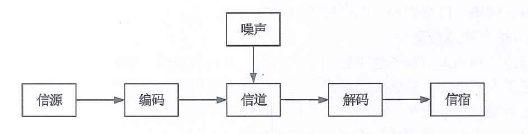
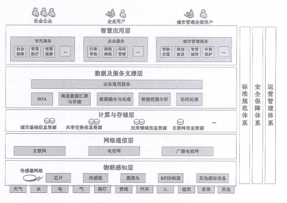

信息与信息化
信息技术不断创新，信息产业持续发展，信息网络广泛普及，信息化成为全球经济社会发展的显著特征。在信息技术的推动下，人类社会已经并正在加速进入全新发展时期，基于智能、网络和大数据的新经济业态正在形成，而“融合”是这个时期的主要特征，表现为信息技术和工业制造深度融合、人和机器的融合、信息资源和材料源的融合。在这个形式下，世界政治、经济、产业、文化和军事发展模式的竞争新格局必将重塑。而教育、医疗、公开服务、社会交往走向全局智能，极大地改变人们生活方式和行为模式。
信息
基本概念
信息是客观事物状态和运动特征的一种普遍形式，客观世界中大量地存在、产生和传递以这些方式表示出来的各种各样的信息；
维纳认为：信息就是信息，既不是物质也不是能量
香农认为：信息就是能够用来消除不确定性的东西。
哲学界认为：信息是事物普遍联系的方式
事物本体论信息：事物的运动状态和状态变化方式的自我表述
信息传输模型

- 1、信源
- 2、信宿
- 3、信道
- 4、编码器
- 5、译码器
- 6、噪声
信息质量属性
- 1、精确性，对事物状态描述的精准程度
- 2、完整性，对事物状态描述的全面程度，完整信息应包括所有重要事实
- 3、可靠性，指信息的来源，采集方法，传输过程，是可以信任的，符合预期的
- 4、及时性，获取信息的时刻与事件发生的时刻的间隔长短。
- 5、经济性，指信息的获取，传输带来的的成本可以在接受范围内
- 6、可验证性，指信息的主要质量属性可以被证实或者证伪程度
- 7、安全性，指信息在生命周期中，信息可以被非授权访问的可能性，可能性越低，安全越高
信息系统
基本概念
系统是指一系列相互影响、相互联系的若干组成部件，在规则的约束下构成有机整体，这个整体具有其各个组成部件所有没有的新的性质和功能，并可以和其他系统或者外部环境发生交互作用。
特点
- 1、目的性
- 系统都有目标性，目标性决定功能
- 2、可嵌套性
- 系统可以包含若干子系统，系统间也能够耦合成一个更大的系统
- 3、稳定性
- 受规则的约束，系统的内部结构和秩序应是可以预见的；系统的状态以及演化路径有限并能被预测；系统功能发生作用导致的后果也是可以预见的。
- 4、开放性
- 指系统的可访问性，这个特性决定了系统可以被外部环境识别，外部环境或者其他系统可以按照预定的方法，使用系统的功能或者影响系统的行为。
- 5、脆弱性
- 与系统的稳定性相对应，即系统可能存在着丧失结构、功能、秩序的特性，这个特性往往是隐藏的不宜被外界感知。一旦被侵入、整体性会被破坏、甚至面临崩溃、系统瓦解
- 6、健壮性
- 具有能够抵御出现非预期状态的特性，高可用系统会采用冗余技术、容错技术、身份识别技术、可靠性技术等来抵御出现非预期的状态，保持系统的稳定性
定义
信息系统是一种以处理信息为目的的专门的系统类型。
生命周期
- 1、立项（系统规则）
- 2、开发（系统分析、系统设计、系统实施）
- 3、运维
- 4、消亡
信息化
- 1、产品信息化
- 传统产品融合计算机化（智能化）器件，使产品具有处理信息的能力
- 2、企业信息化
- 企业在产品设计、开发、生成、管理、经营等多个环节利用信息技术，辅助生产制造，优化工作流程，管理客户关系，建设企业信息管理系统，培养信息化人才并建设完善信息化管理制度（ERP、CRM、SCM）
- 3、产业信息化
- 指农业、工业、交通运输业、生产制造业、服务业等传统产业利用信息技术完成工艺、产品信息化、进一步提高生产力水平
- 4、国民经济信息话
- 指在经济大系统内实现统一的信息大流动，使金融、贸易、投资、计划、通关、营销等组成一个信息大系统，使生产、流通、分配、消费等经济的四个环节通过信息进一步炼成要给整体
- 5、社会生活信息化
- 商务、教育、政务、公共服务、交通、日常生活等在内的整个社会体系采用先进的信息技术，融合各种信息网络，大力开发有关人们日常生活信息服务，丰富人们的物质、精神生活、拓展人们活动时空
国家信息化体系要素
“十二五”期间，“智慧城市”作为新兴的国家级战略规划。
- 1、两网
- 政务内网，政务外网
- 2、一站
- 政府门户网站
- 3、四库
- 建立人口、法人单位、空间地理和自然资源、宏观经济等四个基础数据库
- 4、十二金
- 以“金”字冠名的12个重点业务系统:金宏、金税、金关、金财、金融监管、金审、金盾、金宝、金农、金水、金质
信息化体系六要素
- 1、信息技术应用
- 2、信息资源
- 3、信息网络
- 4、信息技术和产业
- 5、信息化人才
- 6、信息化法规政策和标准规范
信息技术是龙头，信息资源开发利用是国家信息化核心任务，信息网络、信息技术产业是基础、信息化人才是成功之本，法规规范是国家信息化快速、持续、有序、健康发展的根本保障发展趋势
“十三五”规划纲要中，将培育人工智能、移动智能终端、第五代移动通信（5G）、先进传感器等作为新一代信息技术产业创新重点发展，拓展新兴产业发展空间。
发展的10个方面： - 1、高速度大容量
- 2、集成化和平台化
- 3、智能化
- 4、虚拟计算
- 5、通信技术
- 6、遥感和传感技术
- 7、移动智能终端
- 8、以人为本
- 9、信息安全
- 10、两化融合
国家信息化战略和规划
国家信息化战略目标
2006~2020年期间，综合信息基础设施基本普及，信息技术自主创新能力显著增强，信息产业结构全面优化，国家信息安全保障水平大幅提高，国民经济和社会信息化取得明显成效，新型工业化发展模式初步确立，国家信息化发展的制度环境和政策体系基本完善，国民信息技术应用的能力显著提高，为迈向信息社会奠定坚实基础
- 1、促进经济增长方式的根本转变
- 2、实现信息技术自主创新、信息产业发展的跨越
- 3、提升网络普及水平
- 4、增强政府公共服务能力、社会主义先进文化传播能力、中国特色的军事变革能力和国民信息技术应用能力
信息化的指导思想和基本原则
- 1、指导思想
- 以邓小平理论、“三个代表”重要思想和科学发展观为指导，把加快信息化建设作为促进发展方式转变的重要途径，把扩大信息技术应用作为构建现代化产业体系的重大举措，把提高信息服务能力作为保障和改善民生的有力支撑。加强统筹规划、坚持科学发展、以企业为主体、市场为导向，积极推进下一代信息基础设施建设，推动信息化与工业化深度融合，着力突破技术和产业瓶颈，切实增强信息安全保障能力大幅提升信息化水平，为促进经济社会持续发展作出贡献。
2、基本原则
- 1、统筹发展，有序推进
- 2、需求牵引，市场导向
- 3、完善机制、创新驱动
- 4、加强管理，保障安全
发展主要任务和发展重点
- 1、促进工业领域信息化深度应用
- 1、推进信息技术在工业领域全面普及
- 2、推动综合集成应用和业务协同创新
- 3、加快制造业服务化进程
- 4、推广节能减排信息技术
- 5、建立两化融合服务支撑体系
- 2、加快推进服务业信息化
- 1、引导电子商务健康发展
- 2、提示物流信息化水平
- 3、提供服务业重点领域信息化水平
- 3、积极提高中小企业信息化应用水平
- 1、深化中小企业信息技术应用
- 2、继续实施中小企业信息化推进工程
- 4、协力推进农业农村信息化
- 1、完善农村综合信息服务体系
- 2、加强涉农信息资源整合
- 5、全面深化电子政务应用
- 1、推进信息技术与政务工作深度融合
- 2、提示基层电子政务服务能力
- 3、提高社会管理信息化水平
- 6、稳步提高社会事业信息化水平
- 1、大力提高教育信息化水平
- 2、加快医疗卫生信息化建设
- 3、构建覆盖城乡居民的就业和社会保障信息服务体系
- 7、统筹城镇化与信息化互动发展
- 1、提高城市运行管理的智能化水平
- 2、推进社区信息化
- 3、提高公共安全信息化管理水平
- 8、加强信息资源开发利用
- 1、提高政务信息资源共享能力
- 2、加大公益性信息资源利用力度
- 3、发展先进网络化
- 4、壮大数字内容产业
- 9、构建下一代国家综合信息基础设施
- 1、加快宽带网络化升级和区域协调发展
- 2、促进下一代互联网规模商用和前沿布局
- 3、建设安全可靠的信息应用基础设施
- 4、加快推进三网融合
- 5、优化国际通信网络布局
- 10、促进重要领域基础设施智能化改造升级
- 1、加快建设智能电网
- 2、提高综合交通运输体系智能化水平
- 3、提示基层性资源信息化管理水平
- 11、着力提高国民信息能力
- 1、积极开展国民信息技术教育和培训
- 2、培养信息化人才队伍
- 12、加强网络与信息安全保障体系建设
- 1、确保基础信息网络和重要信息系统安全
- 2、强化信息安全基础
- 3、加强信息内容安全管理
电子政务
概念和内容
概念
电子政务是指政府机构在其管理和服务职能中运用现代信息技术，实现政府组织结构和工作流程的重组优化，超越时间、空间和部门分割的制约，建成一个精简、高效、廉洁、公平的政府运作模式
内容
- 1、政府间的电子政务（G2G）
- 2、政府对企业的电子政务（G2B）
- 3、政府对公众的电子政务（G2C）
- 4、政府对公务员（G2E）
企业信息化和两化深度融合
企业信息化概述
- 1、概念
- 在企业作业、管理、决策的各个层面，科学计算、过程控制、事物处理、经营管理的各个领域，引进现代信息技术，全面改革管理体制和机制，从而大幅提高企业工作效率、市场竞争能力和经济效益
- 2、从两化融合到2025中国制造
- 3、战略要点
- 1、以信息化带动工业化
- 2、信息化与企业业务全过程的融合、渗透
- 3、信息产业与企业信息良性互动
- 4、充分发挥政府的引导作用
- 5、高度重视信息安全
- 6、企业信息化与企业的改组改造和现成现代企业制度有机结合
- 7、因地制宜推进企业信息化
企业资源计划（ERP）
- 1、概念
- 由MRP演变并结合计算机技术快速发展而来，大致经历了4个阶段，基本MRP（物料需求计划）、闭环MRP、MRPII、ERP。
- 从MRP中引入质量管理、设备管理、财务管理和人力资源管理，形成统一的企业资源计划ERP
- 一般来说，ERP是一个以财务会记为核心的信息系统，用来识别和规划企业资源，对采购，生产，成本，库存，销售，运输，财务和人力资源等进行规划和优化，从而达到最佳资源组合，是企业利润最大化
客户关系管理（CRM）
- 1、概念
- CRM是一个集成化的信息管理系统，它存储了企业现有和潜在的客户信息，并且对这些信息自动的处理从而产生更人性市场管理策略
供应链管理（SCM）
- 1、概念
- 供应链管理是一种集成的管理思想和方法，是在满足服务水平要求的同时，为了使系统成本到达最低而采用的将供应商、制造商、仓库和商店有效的结合成一体来生产商品，有效地控制和管理各种信息流、资金流、和物流，并把正确数量的商品在正确的时间配送到正确的地点的一套管理方法。
电子商务
- 1、概念
- 以信息网络技术为手段，以商品交换为中心的商务活动；也可以理解为通过网络以电子交易方式进行交易活动和相关服务的活动是传统商业活动各环节的电子化、网络化、信息化。
- 2、电子商务类型
- 1、B2B（企业与企业之间的电子商务）
- 2、B2C（企业与消费者之间的电子商务）
- 3、C2C（消费者与消费者之间的电子商务）
- 4、020（线上购买线下的商品和服务）
商业智能
- 1、概念
- 组织中现有的数据转化为知识，帮助组织做出明智的业务经营决策
- 为了将数据转化为知识，需要利用数据仓库，联机分析处理（OLAP）工具和数据挖掘等技术，因此，从技术层面上讲，商业智能不是什么新技术，他只是数据仓库，OLAP和数据集挖掘等技术的综合运用
- 2、主要功能
- 1、数据仓库：高效的数据存储和访问方式。提供结构化和非机构化的数据存储
- 2、数据ETL：ETL是数据抽取、清洗、转换、装载
- 3、数据统计输出
- 4、分析功能：通过业务规则形成分析内容，帮助做出正确的判断和决策。
- 3、实现的三个层次
- 1、数据报表
- 2、多维数据分析
- 3、数据挖掘
新一代信息技术应用
大数据
- 1、特点
- 1、大量
- 2、高速
- 3、多样
- 4、价值
- 5、真实性
- 2 关键技术
- 1、大数据存储管理技术
- 谷歌文件系统（GFS）和Hadoop的分布式文件系统HDFS
- 2、大数据并行分析技术
- MapReduce
- 3、大数据分析技术
- 1、大数据存储管理技术
云计算
- 1、概念
- 基于互联网的计算方式，通过这种方式，在网络上配置共享的软件资源、计算资源、存储资源和信息资源可以按需求提供给网上终端设备和终端用户。
- 2、服务类型
- 1、LaaS(基础设施即服务)
- 2、PaaS(平台即服务)
- 3、SaaS(软件即服务)
- 3、关键技术
- 1、基础设施关键技术
- 云计算采用X86系列刀片式服务器，通过虚拟化形成统一的服务器资源。
- 2、操作系统关键技术
- 资源池管理技术和向用户提供大规模存储、计算能力的分布式任务和数据管理技术。
- 1、基础设施关键技术
互联网+
- 1、“互联网+”是经济发展的新形态
- 是互联网思维的进一步实践成果，它代表一种先进的生产力，推动经济形态不断的发生演变。
- “互联网+”是把互联网的创新成果与经济社会各领域深度融合，推动技术进步、效率提升和组织变革、提升实体经济创新力和生产力，现成更广泛的以互联网为基础设施和创新要素的经济社会发展新形态。
智慧城市
- 1、智慧城市的内涵和意义
- 推动政府智能转变、推进社会管理创新的新方法、目标是使得基础设施更加智能、公共服务更加便捷、社会管理更加精细、生态环境更加宜居、产业体系更加优化
- 2、智慧城市参考模型
- 1、功能层
- 1、物理感知层
- 2、通信网络层
- 3、计算与存储层
- 4、数据及服务支撑层
- 5、智慧应用层
- 2、支撑体系
- 1、完全保障体系
- 2、建设和运营管理体系
- 3、标准规范体系
- 3、指导思想、基本原则、和主要目标
- 1、指导思想
- 按照走集约、智能、绿色、低碳的新型城镇化道路的总体要求，发货市场在资源配置中的决定性作用，加强和完善政府引导，统筹物资，信息和智力资源，推动新一代信息技术创新应用，加强城市管理和服务体系智能化建设，积极发展民生服务智慧应用，强化网络安全保障。
- 1、指导思想
- 2、基本原则
- 1、以人为本，务实推进
- 2、因地制宜，科学有序
- 3、市场为主，协同创新
- 4、可管可控，确保安全
- 3、主要目标
- 到2020年，建成一批特色鲜明的智慧城市，聚集和辐射带动作用大幅增强，综合竞争优势明显提高，保障和改善民生服务、创新社会管理、维护网络安全等方面取得显著成效
- 1、公共服务便捷化
- 2、城市管理精细化
- 3、生活环境宜居化
- 4、基础设施智能化
- 5、网络安全长效化
- 4、建设关键
- 1、科学制定智慧城市建设顶层设计
- 1、加强顶层设计
- 2、推动构建普惠化公共服务体系
- 3、支撑建立精细化社会管理体系
- 4、促进宜居化生活环境建设
- 5、建立现代化产业发展体系
- 6、加快建设智能化基础设施
- 2、切实加大信息资源开发共享力度
- 1、加快推进信息资源共享与更新
- 2、深化重点领域信息资源开发利用
- 3、积极运用新技术新业态
- 1、加快重点领域物联网应用
- 2、促进云计算和大数据健康发展
- 3、推动信息技术集成应用
- 4、着力加强网络信息安全管理和能力建设
- 1、严格全流程网络安全管理
- 2、加强要害信息设施和信息资源安全防护
- 3、强化安全责任和安全意识
- 5、智慧城市典型应用
- 1、公共事业智能化
- 2、城市智能交通
- 3、城市应急联动
- 1、科学制定智慧城市建设顶层设计
- 1、功能层